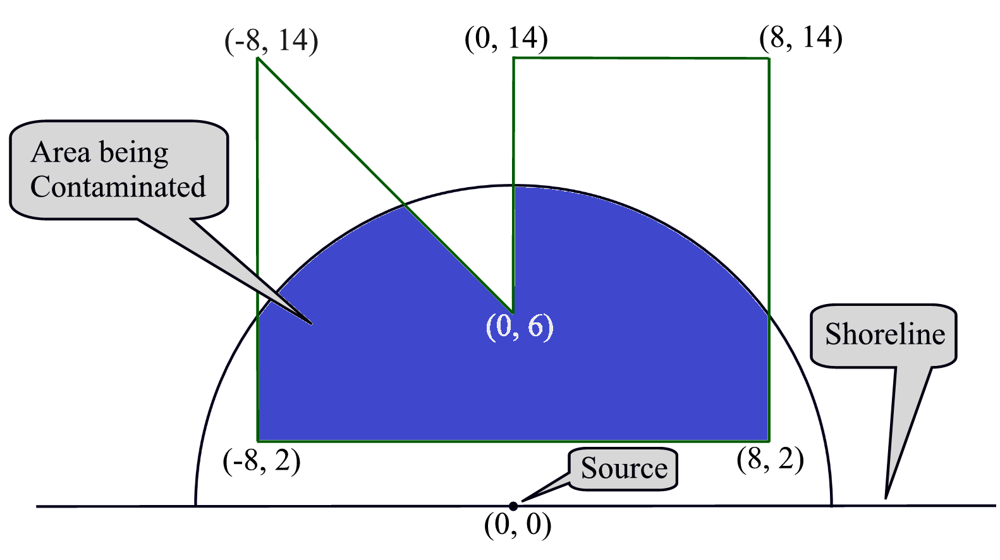

ACM-ICPC World Finals 2013 · Problem J
As an employee of Aqueous Contaminate Management, you must monitor the pollution that gets dumped (sometimes accidentally, sometimes purposefully) into rivers, lakes and oceans. One of your jobs is to measure the impact of the pollution on various ecosystems in the water such as coral reefs, spawning grounds, and so on.

The model you use in your analysis is illustrated in Figure J.1. The shoreline (the horizontal line in the figure) lies on the x-axis with the source of the pollution located at the origin (0,0). The spread of the pollution into the water is represented by the semicircle, and the polygon represents the ecosystem of concern. You must determine the area of the ecosystem that is contaminated, represented by the dark blue region in the figure.
The input consists of a single test case. A test case starts with a line containing two integers n and r, where 3 ≤ n ≤ 100 is the number of vertices in the polygon and 1 ≤ r ≤ 1 000 is the radius of the pollution field. This is followed by n lines, each containing two integers xi, yi, giving the coordinates of the polygon vertices in counter-clockwise order, where −1 500 ≤ xi ≤ 1 500 and 0 ≤ yi ≤ 1 500. The polygon does not self-intersect or touch itself. No vertex lies on the circle boundary.
Display the area of the polygon that falls within the semicircle centered at the origin with radius r. Give the result with an absolute error of at most 10−3.
6 10 -8 2 8 2 8 14 0 14 0 6 -8 14
101.576437872